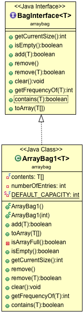

In the Fixed Size Array implementation of a Bag,
depicted below as ArrayBag1, what happens when a client tries to
add an element to the ArrayBag1 but the underlying array is full?

The element does not get added
The add method replaces the last element with the new element
The add method doubles its size and adds the new element